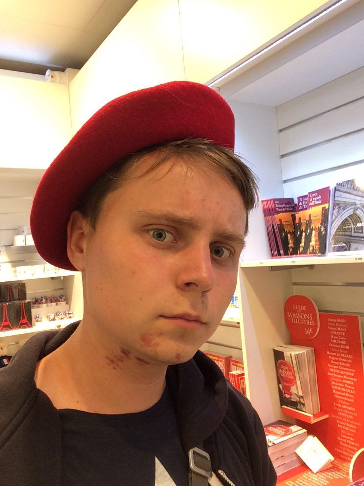

Навигация
Хобби
Навыки
Школьные предметы
Доступ к компьютеру
Ваш браузер не поддерживает функцию audio HTML5

Отключить алерты
Canvas made by Jack Rugile
Show info about me
ФИО
:
Рачинский Денис Богданович
Пол
: Мужской
Дата рождения
: 15.06.1999
Место рождения
: Харьков, Украина
Телефон
: 0696969696
Адрес
: Улица Пушкина 66, кв. 66
Telegram
:
@PoSmole